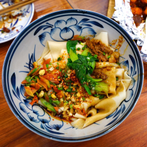
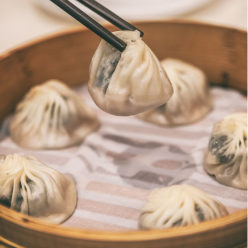
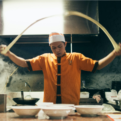
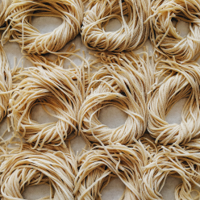
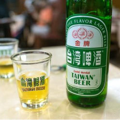
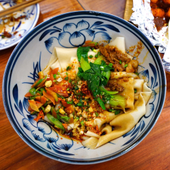
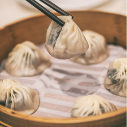
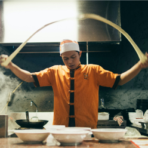
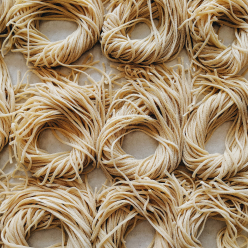
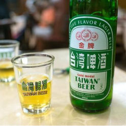

Nos adresses
Yummy Noodle
185 rue du Lancry
75010 Paris

Yu Noodle My
350 rue Saint-Guillaume
75007 Paris
Les Yummy Nouilles
208 rue au Maire
75003 Paris
Commandez maintenant !
Click & CollectNotre savoir-faire
Depuis près de 10 ans maintenant, nous partageons avec vous les meilleures recettes. Nos plats ont tous été
conçus, et affinés au fil des années et des goûts. Nous vous apportons le meilleur de l’Asie de l’Est en plein
coeur de Paris.
Chaque année, nous reprenons tous nos plats pour les améliorer, les modifier et qu’ils vous
plaisent toujours plus. Nous espérons que vous vous régalerez en dégustant nos plats.
Retrouvez-nous sur les réseaux sociaux
 









Contactez-nous
Vous souhaitez nous poser une question, nous faire un feedback, ou tout simplement nous contacter ?
Écrivez-nous à yummy@noodles.fr ou appelez nous au 01 13 86 23 42